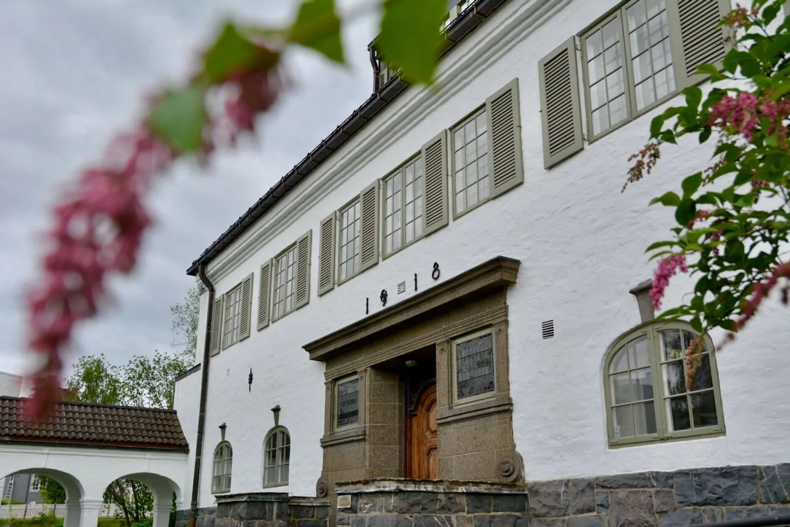

Ne debatai
Tikslas – ne laimėti ginčą, o suprasti patirtis, poreikius ir tai, kas iš tiesų vyksta.
Kviečiame pradėti Viešą dialogą jūsų erdvėje – organizacijoje, bendruomenės namuose, bibliotekoje, muziejuje ar kieme.
Tikslas – ne laimėti ginčą, o suprasti patirtis, poreikius ir tai, kas iš tiesų vyksta.
Pokalbį laiko metodo apmokyti fasilitatoriai, saugantys orumą ir lygiateisį dalyvavimą.
Erdvė, kurioje galima kalbėti jautriomis temomis be etikečių, kaltinimų ir pykčio.
Kodėl dabar?
Gyvename informacinės gausos laike: atsakymus gauname akimirksniu, o nuomonių – tiek, kiek žmonių.
Žinutės keičia žmogiškus pokalbius, tolstame vieni nuo kitų. Todėl dabar ypač svarbu grįžti prie tikrų, gilių pokalbių – čia ir dabar, su gyvu žmogumi.
Tikime, kad gilus pokalbis yra bendruomeniškumo šerdis, brandos šaltinis – kažkas beveik sakralaus, ką verta puoselėti ir išsaugoti.
laisvas žmogus
ryšys
atviras žvilgsnis
Metodas
Viešasis dialogas nėra debatai, ginčas ar tribūninė diskusija. Tai struktūruotas, nešališkai fasilituojamas pokalbis bendro intereso tema.
Mūsų Viešojo dialogo praktikai pasirūpina, kad kiekvienas balsas būtų išgirstas, kiekviena patirtis – priimta su pagarba.
Ne „jie visi…“, o „aš patyriau…“. Tai padeda matyti žmogų, o ne jo stovyklą ar etiketę.
Ne „už ar prieš?“, o „kas iš tiesų vyksta ir ko kam reikia?“. Klausimai padeda eiti giliau.
Pagarbos taisyklės, lygiateisis dalyvavimas ir besąlyginis kiekvieno priėmimas.

Metodo kilmė
Norvegijoje gimusi dialogo praktika, skirta padėti žmonėms kalbėtis ten, kur paprastas pokalbis tampa sunkus.
Sužinoti apie Nansen centrą →Tarptautinė patirtis
Viešojo dialogo metodą sukūrė Nansen Center for Peace and Dialogue Norvegijoje.
Šis metodas taikomas karo, karštų konfliktų ir visuomeninės įtampos aplinkose, taip pat bibliotekose, muziejuose, savivaldybėse, mokyklose, NVO tinkluose ir organizacijose.
Erdvės
Dialogas tinka ten, kur žmonėms svarbu kalbėtis apie bendrus klausimus, įtampas, pokyčius ar temas, kurios paliečia bendruomenės gyvenimą.
Kai komandai reikia kalbėti apie pokyčius, įtampas ar bendrą kryptį.
Bendruomenės namuose, kieme ar kaimynystėje.
Atvirose kultūros ir mokymosi erdvėse.
Mokiniams, tėvams, mokytojams ar visai bendruomenei.
Kai svarbu įtraukti gyventojus ir girdėti skirtingas patirtis.
Gyviems susitikimams ten, kur žmonės kasdien gyvena kartu.
Dialogai taip pat gali vykti muziejuose, NVO tinkluose, verslo organizacijose ar kitose žmonėms patogiose viešose erdvėse.
Procesas
Parašote, kokioje erdvėje ar bendruomenėje norėtumėte pradėti dialogą ir kokia tema šiuo metu jums rūpi.
Išgryniname bendro intereso klausimą: ne „už ar prieš“, o kas iš tiesų vyksta ir ko kam reikia.
Reikalinga patogi, tyli ir saugi aplinka, kurioje dalyviai gali susėsti U forma arba bendru ratu.
Laikome procesą: saugome pagarbą, lygiateisį dalyvavimą ir pasirūpiname, kad kiekvienas balsas būtų išgirstas.
Po dialogo galima aptarti, kas buvo išgirsta, kokios temos liko svarbios ir ar reikalingas tęstinis susitikimas.
Formatas
Trukmė
Įprastai 90–120 min. + 10–15 min. pertraukai ir pabaigos santraukai.
Dalyvių skaičius
Nuo 12 iki 60 žmonių. Didėjant grupei, dirbame su keliomis mažomis grupėmis ir bendru ratu.
Fasilitatoriai
2–3 metodo apmokyti asmenys.
Erdvė
Patogi, tyli ir saugi aplinka, kurioje visi gali matyti vieni kitus.
Komanda
Mūsų komanda – Public Dialogue metodo praktikai ir fasilitatoriai. Dirbame nešališkai, saugodami orumą, lygiateisį dalyvavimą ir vadovaudamiesi „nedaryti žalos“ principu.
Prireikus suburiame kelių fasilitatorių komandą, kad procesas būtų stabilus net įtampos akimirkomis.
DUK
Taip, jei sutariame dėl saugiai drąsių taisyklių ir turime nešališką fasilitavimą.
Ne. Viešasis dialogas nėra skirtas laimėti ginčą.
Kvietimas
Jei jauti, kad subrendo metas pokalbiui iš esmės. Jei pastebi, kad kolegos ar kaimynai tampa svetimi vieni kitiems, kad nesutarimai ima skaldyti bendros veiklos prasmingumą – parašyk mums.
Mes atvyksime ir padėsime sukurti saugią, pagarbią ir gyvą erdvę pokalbiui.
Papasakokite, kokia tema bręsta jūsų bendruomenėje ar organizacijoje.
Paprašyti dialogoParama
Ši iniciatyva remiasi savanoryste ir jūsų pasitikėjimu. Jei norite, kad dialogų būtų daugiau – paremkite mūsų darbą ir padėkite plėsti Viešųjų dialogų geografiją.
Paskirtis: „Viešojo dialogo sesijos“.